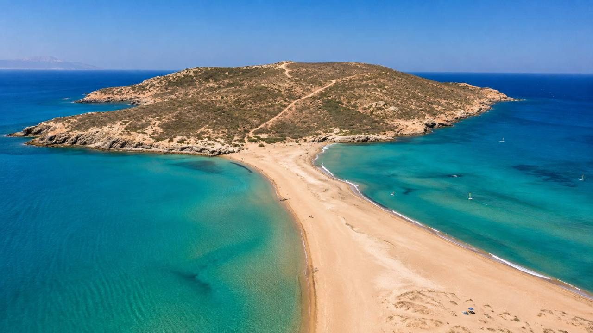
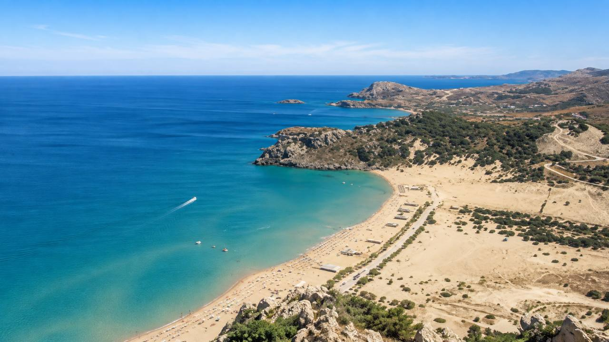
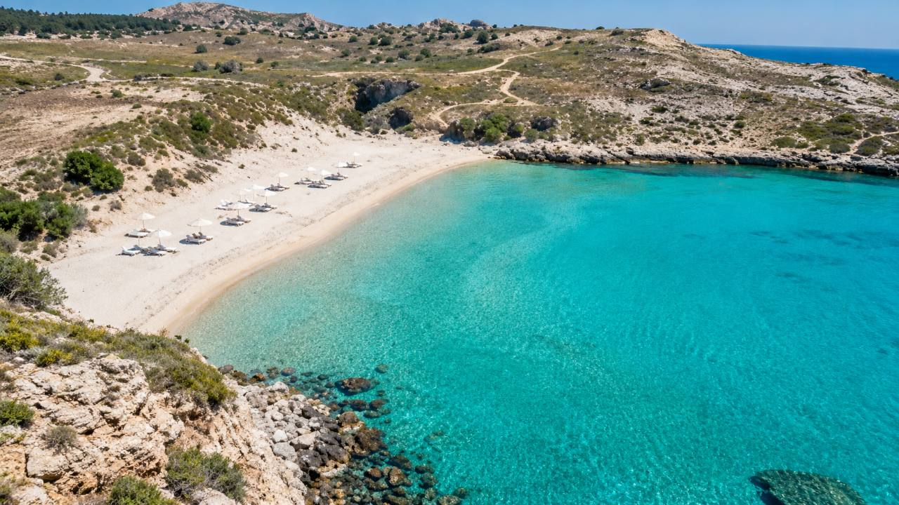
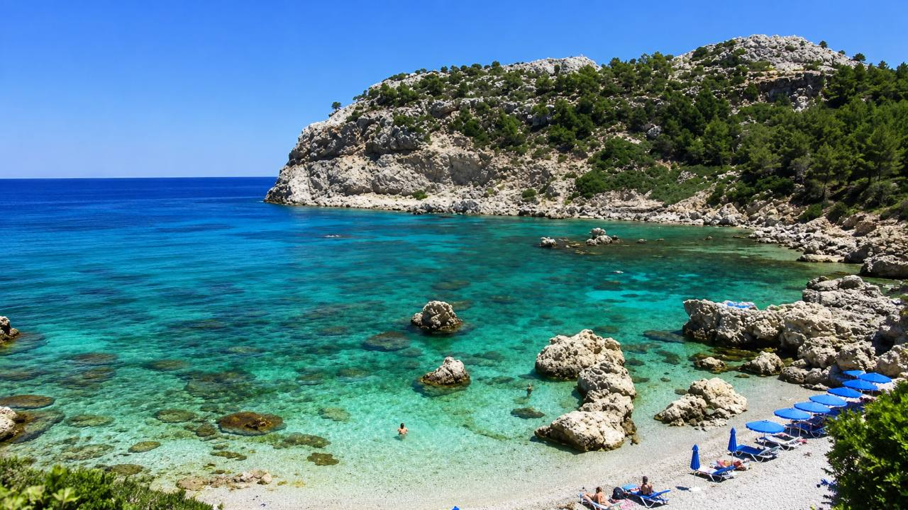
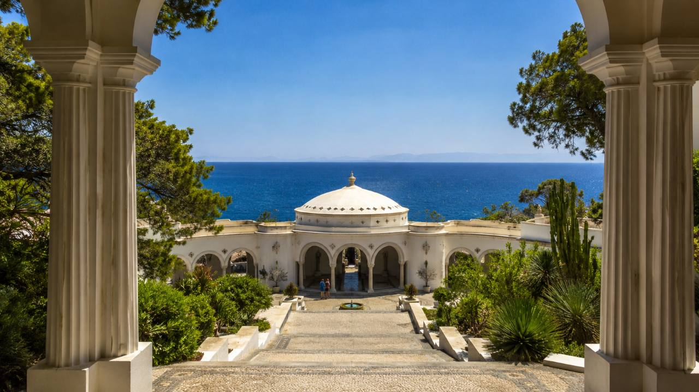
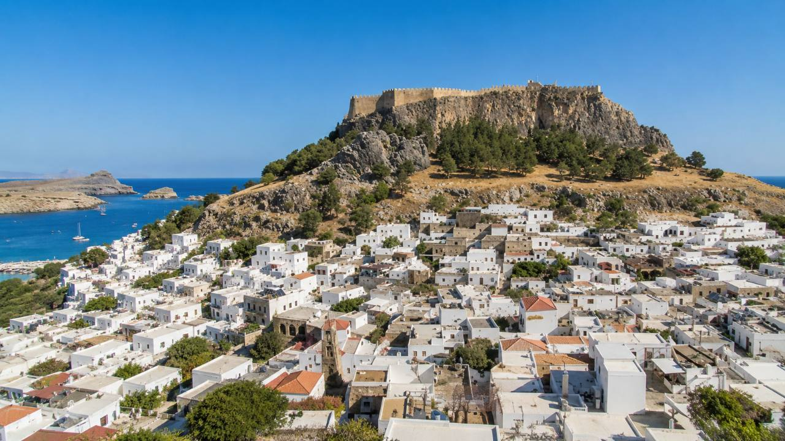
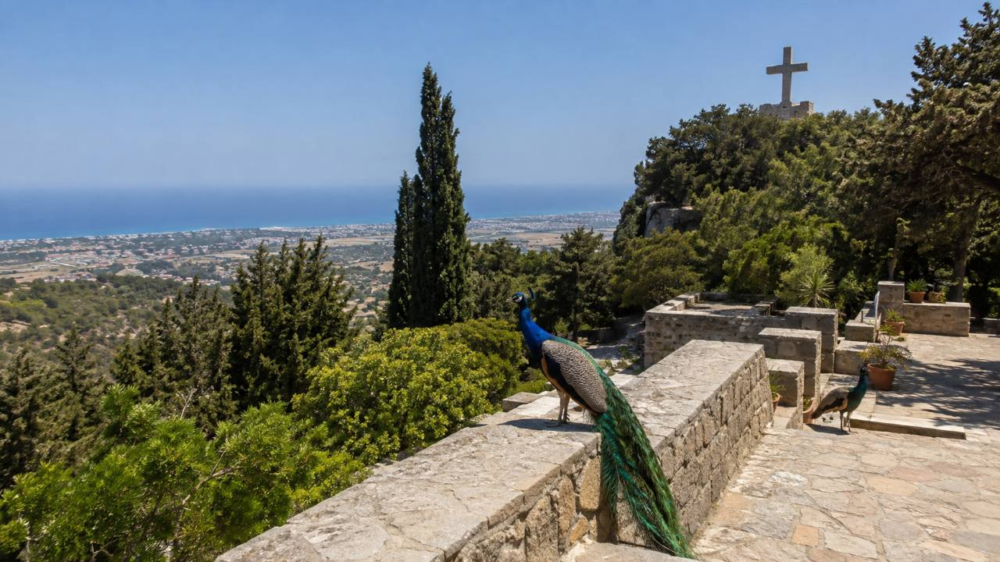

Prvýkrát v roku 2022, keď sme bývali v rezorte v širšej oblasti Lindosu na juhovýchode ostrova. O rok neskôr sme si vybrali úplne inú základňu – Ialyssos na severozápade, približne štyri kilometre vzdušnou čiarou od letiska.
Dve dovolenky. Dve rozdielne časti ostrova. A postupne aj úplne iný pohľad na Rodos.
Najsilnejšia spomienka však zostala na úplnom juhu.
Keď sa cesta pred Prasonisi začne spúšťať a zhora sa pred vami otvorí pieskový pás s morom na oboch stranách, človek na chvíľu prestane riešiť hotel, all inclusive aj to, koľko kilometrov ešte musí večer odšoférovať.
Pri našej prvej návšteve som si tam povedal, že na takom peknom mieste som možno ešte v živote nebol.
A presne tam sa podľa mňa začína skutočný Rodos.
Nie pri hotelovom bazéne, ale v okamihu, keď si požičiate auto a zistíte, koľko úplne rozdielnych miest sa dá na jednom ostrove objaviť.
Ostrov slnka, rytierov a Kolosu rhodského
Rodos patrí k Dodekanézam a grécka turistická organizácia ho opisuje ako ostrov slnka a rytierov. Spája pláže, horské vnútrozemie, dediny, antické pamiatky aj jedno z najzachovalejších stredovekých miest v Európe.
Jeho meno však poznali cestovatelia dávno pred dnešnými dovolenkovými rezortmi.
Práve na Rodose stál Kolos rhodský, monumentálna socha boha Hélia a jeden zo siedmich divov starovekého sveta. Dnešná predstava obrovskej sochy rozkročenej nad vjazdom do prístavu je skôr neskoršou legendou – presné miesto ani podobu jej osadenia nepoznáme.
Príbeh Kolosu však k Rodu patrí dodnes.
A možno práve spojenie starovekej histórie, rytierskych pevností a klasickej letnej dovolenky robí ostrov zaujímavejší než miesto, kam sa prichádza iba ležať na pláži.
Ako sa dostať na Rodos
Stručne: lietadlom na medzinárodné letisko Rhodes Diagoras – RHO na severozápade ostrova.
Priame dovolenkové lety zo Slovenska sú najmä sezónnou záležitosťou a konkrétne linky sa môžu medzi rokmi meniť. Pri plánovaní preto treba vždy skontrolovať aktuálnu ponuku aeroliniek a cestovných kancelárií.
A potom prichádza dôležitejšia otázka:
ostať pri hoteli, alebo si požičať auto?
Po našich skúsenostiach by som pri Rodose odpovedal veľmi jednoducho.
Aspoň na jeden či dva dni si auto požičať.
Jeden deň s autom zmenil celú dovolenku
Pri prvej návšteve sme mali auto požičané v podstate iba na jeden deň.
Aj kvôli zdravotným komplikáciám sme sa k tomu dostali až pred koncom dovolenky. Mohlo sa zdať, že na jeden deň sa to už ani neoplatí.
Bol to presný opak.
Dopoludnia sme vyrazili smerom k Anthony Quinn Bay, neskôr pokračovali na Tsambiku, vrátili sa do rezortu na obed a potom sme zamierili na úplný juh – na Prasonisi.
A zrazu mala dovolenka úplne iný rozmer.
Za jediný deň sme mali viac nových zážitkov než za niekoľko predchádzajúcich dní pri rezorte.
Aj preto by som dnes pri Rodose odporučil: ak máte možnosť, neostaňte celý týždeň iba pri hoteli.

Prasonisi: miesto, kvôli ktorému by som sa na Rodos vrátil
Ak by som mal z celého Rodu vybrať iba jedno miesto, vyberiem Prasonisi.
Bez rozmýšľania.
Leží na úplnom juhu ostrova a už posledná časť cesty stojí za to. Tesne pred cieľom sa krajina otvorí a z výšky prvýkrát uvidíte pieskový pás, more z oboch strán a množstvo malých plachiet na vode.
Prasonisi sa často opisuje ako miesto, kde sa stretáva Egejské a Stredozemné more.
Nečakajte samozrejme namaľovanú hranicu medzi dvoma oceánmi. To zaujímavé je v rozdielnom charaktere oboch strán pieskového pásu.
Keď sme tam boli my, rozdiel bol viditeľný veľmi dobre.
Na jednej strane dominovali kitesurferi, na druhej windsurferi a surferi. Vietor, vlny, piesok a otvorené more vytvárali scénu úplne odlišnú od klasických hotelových pláží.
Pri našej prvej návšteve bol pieskový pás zaplavený natoľko, že ak som sa chcel dostať na druhú stranu k samotnému Prasonisi, musel som časť preplávať.
A ja som sa tam dostať chcel.
Pri druhej návšteve, o rok neskôr, vyzeralo miesto úplne inak. Tentoraz sa dalo prejsť po piesku suchou nohou.
Práve to je na Prasonisi zaujímavé. Podoba pieskového spojenia sa môže meniť podľa vĺn, vetra, hladiny mora a presunu piesku.
Naša skúsenosť: ak budete mať na Rodose auto a rozmýšľate, či sa oplatí ísť až na úplný juh, za nás jednoznačne áno.
Nie iba kvôli samotnej pláži.
Kvôli posledným kilometrom cesty, prvému pohľadu zhora a pocitu, že ste prišli na koniec ostrova.
Pre mňa to zostáva najkrajšie miesto, ktoré sme na Rodose navštívili.
Tsambika: široká pláž bez hotelov za chrbtom
Tsambika bola presným opakom malej Anthony Quinn Bay.
Dlhá, široká piesočnatá pláž, veľa priestoru a pozvoľný vstup do mora.
V júni sme tu mali príjemne teplú vodu a poriadne rozpálený piesok. Pláž je vhodná aj pre rodiny s deťmi, pretože vstup do vody je pozvoľný a človek nemusí po pár metroch stratiť dno.
Veľkou výhodou je aj prostredie.
Priamo za plážou nevyrastá súvislá stena veľkých hotelových rezortov, takže Tsambika pôsobí otvorenejšie než mnohé klasické dovolenkové pláže.
Kto nechce iba ležať, nájde tu aj vodné atrakcie. Počas našej návštevy fungovali rôzne nafukovacie atrakcie na vode aj vodné športy vrátane parasailingu, pri ktorom človeka na padáku ťahá motorový čln.
Nad plážou sa navyše nachádza kláštor Panagia Tsambika.
K hornej kaplnke vedie od parkoviska 297 schodov. Cesta je krátka, ale pomerne strmá a v letnej horúčave ju určite netreba podceniť. Odmenou je panoramatický pohľad na východné pobrežie a samotnú Tsambika Beach.

A jedna menej príjemná skúsenosť
Na Tsambike sme si chceli dať niečo jednoduché pod zub v jednom z podnikov pri pláži.
Čakali sme, že si objednáme rýchle jedlo a pokračujeme ďalej.
Namiesto toho nás usadili a čakali sme.
A čakali.
Po približne 45 minútach sme videli, že jedlo práve dostal prvý z niekoľkých stolov pred nami. Keďže sme mali auto iba na jeden deň a chceli sme ešte stihnúť Prasonisi, objednávku sme vzdali a odišli.
Nie je to hodnotenie celej Tsambiky ani všetkých podnikov na pláži. Bola to jednoducho jedna naša nepríjemná skúsenosť.
Vrátili sme sa do rezortu, využili all inclusive, najedli sa a pokračovali na juh.
A našťastie sme pokračovali – pretože nás čakalo Prasonisi.
Agathi Beach: menšia dcéra Tsambiky
Ak by som mal Agathi Beach niekomu opísať jednou vetou, povedal by som:
Taká menšia dcéra Tsambiky.
Aj tu je svetlý piesok, pokojnejšia voda a pozvoľný vstup do mora.
Len celé miesto pôsobí kompaktnejšie.
Na Agathi máme aj jednu úsmevnú spomienku na cestu. Navigácia nás zaviedla trasou, ktorá bola miestami kamenistá a oveľa horšia, než sme čakali.
Našťastie existuje aj normálnejší prístup – takže jedna praktická rada: neveriť navigácii bezvýhradne a pri podozrivej odbočke si radšej pozrieť, kam vás vlastne vedie.
Samotná pláž však stála za to.
Práve tu som mal pocit, že vidím najčistejšiu vodu zo všetkých miest, ktoré sme na Rodose navštívili.
Pri šnorchlovaní pri skalnatých okrajoch pláže bola viditeľnosť pod vodou výborná. Človek videl ďaleko pred seba, medzi skalami sa pohybovali rybky a celé miesto pôsobilo veľmi čisto.
Ak Tsambiku odporúčam pre veľký priestor a rodiny, Agathi by som vybral pre človeka, ktorý chce podobný typ pláže v menšom balení a rád si vezme okuliare a šnorchel.

Anthony Quinn Bay: klasika, ktorú sa oplatí vidieť
Anthony Quinn Bay patrí k najfotografovanejším zátokám Rodu.
My sme ju navštívili dopoludnia počas nášho prvého veľkého výletu autom.
Neprišiel žiadny šok typu „toto som ešte nikdy nevidel“. Je to jednoducho veľmi pekná, známa zátoka obklopená skalami a zeleňou.
Oveľa viac ma však zaujalo to, čo bolo pod vodou.
Pri šnorchlovaní tu bol pestrejší podmorský život než na mnohých obyčajných piesočnatých plážach.
A práve na to je Anthony Quinn Bay podľa mňa ideálna.
Nie na predstavu kilometrového pieskového pobrežia, ale na pár hodín medzi skalami, kúpanie a šnorchlovanie.

Kallithea Springs: miesto, kde sa oplatí mať fotoaparát
Kallithea Springs patria k úplne inému typu výletu.
Sem by som nešiel primárne za veľkou plážou.
Išiel by som za architektúrou, atmosférou a fotografiami.
Komplex spája zrekonštruovanú historickú architektúru, oblúky, kupoly, kamenné mozaiky, záhrady a malú zátoku s priezračnou vodou. Oficiálna stránka uvádza, že areál bol po rozsiahlej obnove znovu otvorený v roku 2007.
Najkrajšie sú podľa mňa pohľady zvnútra stavieb smerom k moru.
Keď sa postavíte pod oblúk alebo do centrálnej kupoly a za architektúrou máte iba sýtomodré more a oblohu, vznikajú fotografie, ktoré vyzerajú takmer ako pripravená dovolenková kulisa.
Ak si chce niekto z dovolenky priniesť pekné párové alebo portrétne fotografie, Kallithea je jedno z najlepších miest, ktoré sme na Rodose našli.
Kúpať sa dá aj v malej zátoke pri komplexe, ale pre nás bola hlavnou atrakciou samotná architektúra a prostredie.
Aktuálne oficiálne vstupné uvádzané areálom je 5 € pre dospelého a 2,50 € pre deti do 12 rokov; pred návštevou je dobré cenu ešte skontrolovať, pretože sa môže časom meniť.

Lindos: najlepšie až podvečer
Ak hľadáte klasický obraz Grécka – biele domčeky, úzke uličky, strešné terasy a nad tým všetkým starovekú akropolu – dostanete ho v Lindose.
Za nás by som však Lindos odporúčal skôr neskôr popoludní a večer.
Cez deň tu môže byť v sezóne veľmi horúco. Keď slnko začne klesať, uličky dostanú úplne inú atmosféru.
Lindos nie je veľké mesto. Práve to je jeho čaro.
Prejdete sa úzkymi uličkami, pozriete si obchody so suvenírmi a môžete si sadnúť na jednu zo strešných terás.
Večera na streche bieleho domu s osvetlenou akropolou nad hlavou je presne ten typ zážitku, ktorý si človek s gréckou dovolenkou spája.
Romantika? Určite.
Lindos funguje veľmi dobre práve večer.
Nad mestom sa nachádza Akropola v Lindose. Výstup poskytuje nádherné pohľady na mestečko, more aj zátoku svätého Pavla.
V sezóne 2026 je podľa oficiálnej platformy gréckeho ministerstva kultúry plné vstupné 20 € a znížené 10 €. Otváracie hodiny aj ceny sa môžu meniť, takže pred cestou odporúčam skontrolovať oficiálnu stránku.
Počas našej návštevy bola v Lindose aj možnosť vyviezť sa časť cesty na somároch. Myšlienku nechám na rozhodnutí každého cestovateľa; peší výstup je zároveň súčasťou samotnej návštevy.
Praktický problém môže byť doprava.
Taxíky nám pripadali dosť drahé, takže pri večernej návšteve by som skôr volil vlastné auto, autobus alebo organizovaný výlet.
A ak máte dron, okolie Lindosu je vizuálne nádherné – samozrejme iba tam, kde je lietanie legálne a povolené. Pri archeologických lokalitách treba obmedzenia vždy preveriť.

Filerimos: pávy, pokoj a lietadlá pod vami
Filerimos je jedno z miest, ktoré by som odporučil človeku, ktorý nechce každý deň iba pláž.
Pri druhom pobyte sme bývali v Ialyssose, takže sme ho mali prakticky za rohom.
Na návštevu netreba celý deň.
Približne hodina až hodina a pol stačí na príjemnú prechádzku areálom, výhľady a zastávky pri pamiatkach.
Po areáli sa voľne pohybujú pávy, takže najmä s deťmi je už samotná prechádzka zaujímavejšia.
Na vrchu stojí kláštor Filerimos a od jeho okolia vedie dlhá cesta smerujúca ku krížu a vyhliadkam. Miesto má antickú aj stredovekú históriu.
Pre nás však mal Filerimos ešte jednu atrakciu.
Lietadlá.
Z vyvýšenej polohy vidíte Ialyssos, okolie dnešného letiska aj časť severozápadného pobrežia. Pri vhodnom smere pristávania môžete sledovať lietadlo z perspektívy, pri ktorej ste chvíľu dokonca vyššie než samotný stroj letiaci k dráhe.
Vidieť je aj oblasť starého letiska.
Ak vás lietadlá vôbec nezaujímajú, stále zostane príjemná prechádzka a výhľad.
Ak ich máte radi tak ako my, Filerimos dostáva bonusové body.

Ialyssos: Rodos s vetrom a lietadlami nad hotelom
Druhýkrát sme si vybrali severozápad ostrova.
Bývali sme v Ialyssose, približne štyri kilometre vzdušnou čiarou od letiska.
A rozdiel oproti juhovýchodu bol cítiť.
Táto strana Rodu je veternejšia a pláže, ktoré sme mali pri hoteli, boli kamenistejšie. Topánky do vody by som sem určite odporúčal.
Pre rodinu s malými deťmi, ktorá chce pokojné piesočnaté more a veľmi pozvoľný vstup, by som preto skôr pozeral po východnej až juhovýchodnej strane ostrova.
Ialyssos má však inú atmosféru.
A potom sú tu tie lietadlá.
Pristávajúca premávka nám viedla prakticky ponad hotel. Spočiatku sme sa obzerali za každým strojom.
Po pár dňoch sme si zvykli natoľko, že sme ich skoro prestali registrovať.
Dokonca ani nočný hluk nás zásadne nerušil.
Pre niekoho by to bol dôvod hotel odmietnuť. Pre nás to bola ďalšia dovolenková atrakcia.
Raz som sa vybral aj autom okolo letiska pozorovať premávku z bližších miest. Je to zaujímavé, ale ak niekto pozná napríklad slávny spotting na Zakynthose, Rodos v tomto smere podľa mňa taký silný zážitok neponúka.
Faliraki: živšia tvár ostrova
Faliraki sme počas našich ciest tiež navštívili.
Je to tá dovolenkovejšia a rušnejšia tvár Rodu – veľká pláž, množstvo ubytovania, reštaurácie, bary a zábava.
Osobne v nás Faliraki nezanechalo takú výraznú spomienku ako Prasonisi, Lindos, Tsambika alebo Agathi.
To však neznamená, že je zlé.
Pre človeka, ktorý chce veľké letovisko a večer nechce zostať odkázaný iba na hotel, môže byť práve Faliraki dobrou základňou.
Čo sme na Rodose zatiaľ nevideli
Ani dve návštevy nestačili na celý ostrov.
Nasledujúce miesta sme zatiaľ osobne nenavštívili, ale pri ďalšej ceste by som ich určite zaradil do programu.
Mesto Rodos: rytieri, hradby a jeden zo siedmich divov
Najväčší rest máme paradoxne v samotnom meste Rodos.
Jeho stredoveké centrum patrí medzi najvýznamnejšie historické lokality ostrova a je zapísané v zozname svetového dedičstva UNESCO.
Ulica rytierov, Palác veľmajstrov, mohutné hradby a prístav Mandraki sú dôvodom vyhradiť si na mesto minimálne niekoľko hodín.
S mestom sa spája aj príbeh Kolosu rhodského.
Presné miesto, kde monument stál, dnes nepoznáme, takže pri Mandraki netreba hľadať dve konkrétne miesta nôh legendárnej sochy.
Stačí si uvedomiť, že niekde v tomto meste pred viac než dvetisíc rokmi stál monument, ktorý sa dostal medzi sedem divov starovekého sveta.
Údolie motýľov
Valley of the Butterflies – Petaloudes ponúka zelenšiu tvár Rodu.
Cesta vedie tienistým údolím popri vode, drevených mostíkoch a stromoch. Najväčšiu šancu na veľké množstvo motýľov má návštevník počas letnej sezóny.
Oficiálna stránka v roku 2026 uvádza od 22. júna do 30. septembra vstupné 6 € pre dospelého, deti do 12 rokov majú vstup zdarma. Areál upozorňuje aj na strmší prírodný terén.
Dôležité je správať sa potichu a motýle zámerne nevyrušovať.
Attavyros: najvyšší bod Rodu
Tu vzniká častý zmätok.
Najvyšším vrchom Rodu nie je Monolithos, ale Attavyros, vysoký približne 1 215 metrov.
K vrcholu vedú turistické trasy a existuje aj cesta smerujúca veľmi vysoko k vrcholu.
Stav jej nespevnených častí však môže byť premenlivý. Pri požičanom aute by som preto najskôr overil podmienky požičovne a aktuálny stav cesty. To, že niekto vyjde hore osobným autom, ešte automaticky neznamená, že je to vhodné pre každé vozidlo.
Pre výhľady na vnútrozemie a západnú časť ostrova však Attavyros vyzerá ako veľmi zaujímavý cieľ.
Monolithos: hrad na skale
Monolithos je niečo úplne iné.
Na vysokom skalnom brale tu stoja ruiny rytierskeho hradu z 15. storočia s výhľadom na západné pobrežie a more.
Samotná návšteva nie je celodenným programom. Skôr ide o zastávku počas jazdy po pokojnejšej západnej strane ostrova – krátky výstup a panoráma, kvôli ktorej sa oplatí vytiahnuť fotoaparát.
Symi: výlet na úplne iný ostrov
Z Rodu sa dá vyraziť aj na neďaleký ostrov Symi.
Je známy najmä farebnými neoklasicistickými domami vystavanými okolo prístavu a kláštorom Panormitis.
My sme tam zatiaľ neboli, takže ho nebudem opisovať ako osobnú skúsenosť.
Ako jednodňový výlet z Rodu však patrí medzi najzaujímavejšie možnosti, ak človek chce jeden dovolenkový deň vymeniť za ďalší grécky ostrov.
A čo požiare?
Pri cestovaní po Rodose sme videli aj úseky so spálenými stromami.
V lete 2023 ostrov zasiahli rozsiahle lesné požiare, ktoré viedli aj k veľkým evakuáciám turistických oblastí. Rozsah udalosti dokumentovali grécke aj európske orgány a viaceré nezávislé zdroje.
Netreba z toho robiť dôvod Rodos nenavštíviť.
Je to však dôvod byť počas najhorúcejších a najsuchších týždňov leta pozorný.
Ak cestujete autom do vnútrozemia, sledujte aktuálne výstrahy gréckej Civil Protection, rešpektujte uzávery ciest a pri mimoriadnej udalosti pokyny systému 112. Aktuálna situácia má vždy prednosť pred plánovaným výletom.
Ktorá časť Rodu je najlepšia?
Po dvoch pobytoch by som ostrov rozdelil veľmi jednoducho.
Juhovýchod a východ
Za nás lepšia voľba pre:
- rodiny s deťmi,
- milovníkov piesočnatých pláží,
- pokojnejšie kúpanie,
- Lindos, Tsambiku a Agathi,
- výlety smerom na Prasonisi.
Práve túto časť by som odporučil človeku, ktorý ide na Rodos prvýkrát a chce klasickú letnú dovolenku pri peknom mori.
Sever a severozápad
Zaujímavejší pre:
- ľudí, ktorým neprekáža vietor,
- windsurfing a vodné športy,
- výlety do mesta Rodos,
- Filerimos,
- blízkosť letiska,
- fanúšikov lietadiel.
Pláže môžu byť kamenistejšie a more živšie.
My sme však práve vďaka dvom pobytom na opačných stranách zistili, že Rodos nemá iba jednu tvár.
Oplatí sa auto?
Za mňa je toto asi najpraktickejšia rada z celého článku:
áno, minimálne na jeden alebo dva dni.
Prvýkrát sme ho mali iba jediný deň.
A práve počas toho dňa sme navštívili Anthony Quinn Bay, Tsambiku a Prasonisi.
Bol to deň, ktorý zmenil celú dovolenku.
Nemusíte preto automaticky platiť auto na celý týždeň.
Ak chcete hlavne oddychovať, požičajte si ho na dva alebo tri dni, pripravte si trasu a zvyšok dovolenky zostaňte pri mori.
Rodos je na takýto spôsob cestovania ideálny.
Je dostatočne veľký na to, aby ste stále objavovali niečo nové, ale nie taký veľký, aby každý výlet znamenal celodennú expedíciu.
Pre koho je Rodos?
Po dvoch návštevách ho považujem za jeden z tých ostrovov, ktoré sa dajú odporučiť veľmi širokému okruhu ľudí.
Rodinám s deťmi – najmä vďaka piesočnatým plážam na východe a juhovýchode.
Párom – Lindos večer alebo Kallithea ponúkajú úplne inú atmosféru než klasický rezort.
Ľuďom, ktorí radi cestujú autom – na relatívne malom priestore je veľa rozdielnych výletov.
Milovníkom histórie – Lindos, mesto Rodos, Kamiros a rytierske hrady.
Fanúšikom vodných športov – najmä veterný západ a Prasonisi.
A pokojne aj človeku, ktorý chce týždeň all inclusive.
Len by som mu odporučil aspoň na jeden deň z hotela odísť.
Úprimný záver
Na prvý pobyt na Rodose sme išli ako na klasickú dovolenku.
Hotel, more, all inclusive.
A potom sme si na jeden deň požičali auto.
Anthony Quinn. Tsambika. Prasonisi.
A zrazu sa z obyčajného pobytu pri mori stal ostrov, ktorý sme chceli ďalej objavovať.
O rok sme sa vrátili.
Tentoraz na severozápad. K lietadlám, vetru, kamenistejšiemu pobrežiu a Filerimosu.
A stále máme dôvody prísť tretíkrát.
Nevideli sme mesto Rodos. Nešli sme do Údolia motýľov. Zostal Attavyros, Monolithos aj výlet na Symi.
Možno práve to je najlepšia charakteristika Rodu.
Nie je to ostrov jednej dokonalej pláže.
Je to ostrov, kde ráno môžete šnorchlovať pri skalách, popoludní stáť medzi surfermi na úplnom juhu, ďalší deň sa prechádzať medzi pávmi vysoko nad letiskom a večer sedieť na streche bieleho domu pod akropolou v Lindose.
A niekde nad celým týmto príbehom stále visí spomienka na Hélia a Kolos rhodský – jeden zo siedmich divov starovekého sveta.
My sme sa na Rodos vrátili dvakrát.
A tretí návrat by mi vôbec neprekážal.
Poznámka redakcie: Ilustračné vizuály slúžia na priblíženie miest a atmosféry; nejde o autentické fotografie z konkrétnej návštevy.